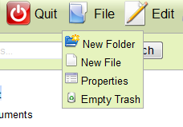
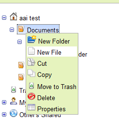
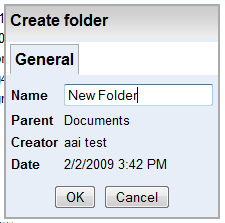
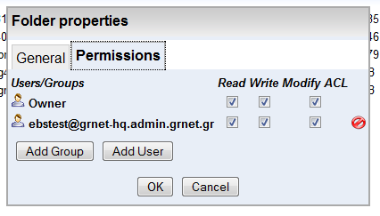

Γενικά στοιχεία καταλόγου
Στοιχεία δικαιωμάτων πρόσβασης καταλόγου
Νέος κατάλογος μπορεί να δημιουργηθεί ως υποκατάλογος του κεντρικού καταλόγου του χρήστη, ή υποκαταλόγου του. Αυτό μπορεί να γίνει ως εξής:
1. Επιλογή του καταλόγου "πατέρα"
2. Επιλογή ενέργειας "New Folder" είτε από το μενού "File", είτε από το context menu που εμφανίζεται
με right mouse click πάνω στον κατάλογο, όπως φαίνεται στις παρακάτω είκόνες:
|

Επιλογή New Folder από το μενού File |

Επιλογή New Folder από το context menu (right click) του καταλόγου |
3. Το σύστημα εμφανίζει διάλογο για τον ορισμό του ονόματος του καταλόγου(όπως φαίνεται στο σχήμα).
|

Διάλογος για τη δημιουργία καταλόγου |
4. Ο χρήστης συμπληρώνει το όνομα του καταλόγου και επιλέγοντας "ΟΚ", ο διάλογος κλείνει, το σύστημα δημιουργεί τον κατάλογο και το δέντρο καταλόγων ενημερώνεται κατάλληλα. Αν ο χρήστης επιλέξει "Cancel", η ενέργεια ακυρώνεται χωρίς καμμία επίπτωση.
Ο χρήστης έχει πρόσβαση στα στοιχεία (μετα-δεδομένα) του επιλεγμένου καταλόγου μέσω της επιλογής "Properties" του μενού "File" ή του file context menu (right mouse click στο αρχείο) αφού πρώτα επιλεγεί κατάλογος από το δέντρο καταλόγων.
Η επιλογή "Properties" εμφανίζει διάλογο με δύο tabs για τα μετα-δεδομένα του επιλεγμένου
καταλόγου, όπως δείχνουν οι παρακάτω εικόνες. Το πρώτο tab (τίτλος "General") εμφανίζει τα
γενικά στοιχεία του καταλόγου, όπως: όνομα, κατάλογος-πατέρας, ιδιοκτήτης, ημερομηνία & ώρα δημιουργίας.
Μέσω αυτού του tab μπορεί να αλλάξει το όνομα του καταλόγου. Το δεύτερο tab (τίτλος "Sharing")
εμφανίζει και επιτρέπει τη διαχείριση των δικαιωμάτων πρόσβασης στον κατάλογο - επεξηγείται με
λεπτομέρειες εδώ.
|
Γενικά στοιχεία καταλόγου |

Στοιχεία δικαιωμάτων πρόσβασης καταλόγου |